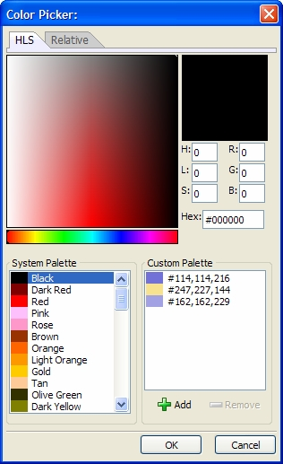
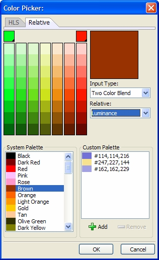
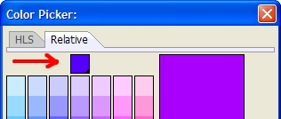
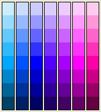

Using the Color Picker
The Color Picker allows you to select very subtle colors and to create colors with RGB (Red, Green, Blue) or HLS (Hue, Saturation, Luminance) definitions.
Using the HLS Tab
Optionally, select a color from the System palette.
Optionally, select a color from the Custom palette.

Optionally, specify a new color:
Enter a number from 0 to 255 in each of the H, L, S fields. The Hex field shows you the value that will be inserted into the HTML file.
Enter a number from 0 to 255 in each of the R, G, B fields. The Hex field shows you the value that will be inserted into the HTML file.
Optionally, click Add To Custom palette. This will add the new color to the Custom Color list.
Click OK to apply the color or Cancel to discard your inputs.
Using the Relative Tab
The Relative tab is new with Version 8.
Optionally, select a color from the System palette.
Optionally, select a color from the Custom palette.

Optionally, specify a new color. There are several techniques available in the Input Type list.
"One Color Hue Adjustment"
"Two Color Blend"
"Custom Palette"
If you selected "One Color Hue Adjustment" in step 3:
Click the single color square at the top of the array to select another color.

Adjust the color array by selecting an entry from the Relative list. The options are:
"Luminance"
"Saturation"
"Cooler"
"Warmer"
Select a color in the color array and click
 Add.
Add.

If you selected "Two Color Blend" in step 3:
Click the two color squares at the top of the color array to select two colors.
Adjust the color array by selecting an entry from the Relative list. The options are:
"Luminance"
"Saturation"
"Cooler"
"Warmer"
Select a color in the color array and click
Add.If you selected "Custom Palette" in step 3:
Click any combination of color squares at the top of the color array to select colors.
Adjust the color array by selecting an entry from the Relative list. The options are:
"Luminance"
"Saturation"
"Cooler"
"Warmer"
Select a color in the color array and click
Add.
See Also
Specifying Colors, A5.COLOR_ENUM(), A5.SYSTEM_COLORS_GET()